먼저 생각해 보세요.
Mein Kopf tut weh. 이 문장에서 '아프다'는 뜻의 말은 무엇일까요?
wehtun은 aufstehen처럼 나뉘는 동사예요. tut은 둘째 자리에, weh는 맨 끝에 와요.
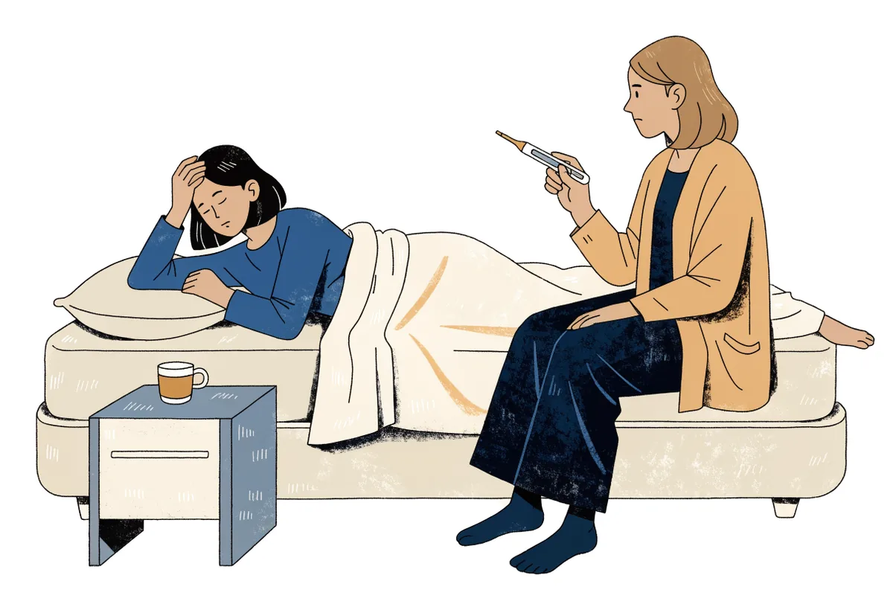
월요일 아침이에요. Yuna가 일어나지 못해요. 의사인 Sabine가 Yuna의 방에 들어와요.
눌러서 들어 보세요.
먼저 생각해 보세요.
Mein Kopf tut weh. 이 문장에서 '아프다'는 뜻의 말은 무엇일까요?
wehtun은 aufstehen처럼 나뉘는 동사예요. tut은 둘째 자리에, weh는 맨 끝에 와요.
Lektion 4의 낱말 다섯 개를 다시 떠올려 보세요.
문법 sollen, dürfen, Personalpronomen im Dativ (ihm, ihr, uns), wehtun
이 과를 마치면 어디가 아픈지 말하고, 아픈 친구에게 조언할 수 있어요.
월요일 아침, Yuna의 방이에요.
들으면서 찾아보세요. Yuna는 어디가 아픈가요?
같은 날 아침, 8b 교실이에요.
들으면서 찾아보세요. Elif는 Yuna를 위해 무엇을 하나요?
두 대화를 듣고 답하세요.
Yuna는 어디가 아픈가요?
Yuna darf heute in die Schule gehen.
Heute darfst du nicht in die Schule gehen.
Sabine는 Yuna에게 무엇을 하라고 하나요?
Elif는 Yuna를 위해 무엇을 하나요?
Tim hat Halsschmerzen.
Ihm tut der Bauch weh. Tim은 배가 아파요.
Wer ruft Frau Schneider an?
낱말 26개예요. 낱말이나 예문 앞의 단추를 누르면 소리가 나요. 명사는 der, die, das를 색으로 구분했어요.
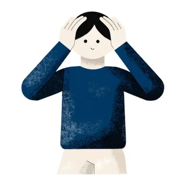
der Kopf, die Köpfe 머리
Mein Kopf tut weh.머리가 아파요.
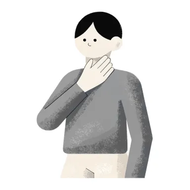
der Hals, die Hälse 목
Mein Hals tut weh.목이 아파요.
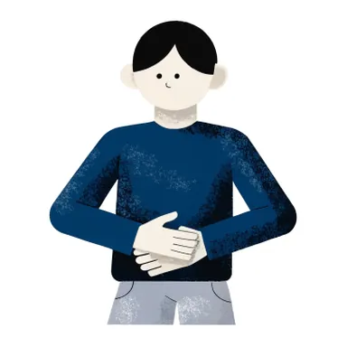
der Bauch, die Bäuche 배
Ihm tut der Bauch weh.그는 배가 아파요.
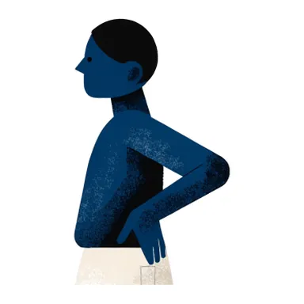
der Rücken, die Rücken 등
Mir tut der Rücken weh.나는 등이 아파요.
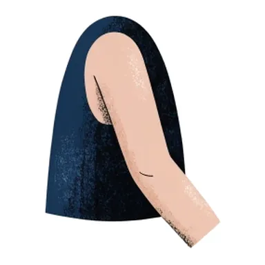
der Arm, die Arme 팔
Mein Arm tut weh.팔이 아파요.
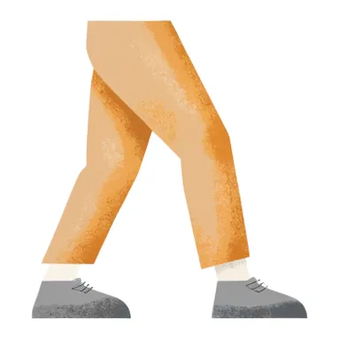
das Bein, die Beine 다리
Das Bein tut weh.다리가 아파요.
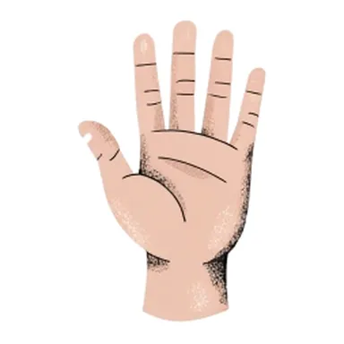
die Hand, die Hände 손
Meine Hand tut weh.손이 아파요.
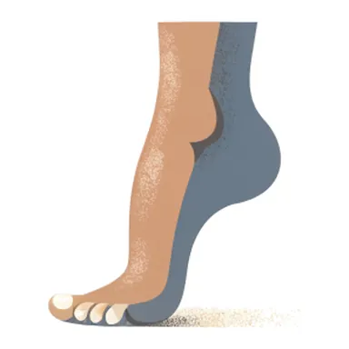
der Fuß, die Füße 발
Meine Füße tun weh.발이 아파요.
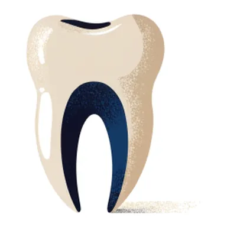
der Zahn, die Zähne 이, 치아
Der Zahn tut weh.이가 아파요.
krank 아픈, 병이 난
Yuna ist krank.Yuna는 아파요.
gesund 건강한
Wir sind gesund.우리는 건강해요.
müde 피곤한
Ich bin so müde.나는 너무 피곤해요.
wehtun 아프다
Was tut dir weh?어디가 아파?
die Schmerzen (Pl.) 통증
Ich habe Halsschmerzen.나는 목이 아파요.
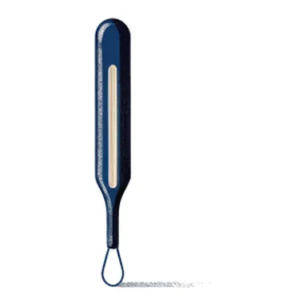
das Fieber 열
Hast du Fieber?열이 있어?
der Arzt, die Ärzte 의사
Ich muss zum Arzt gehen.나는 병원에 가야 해요.
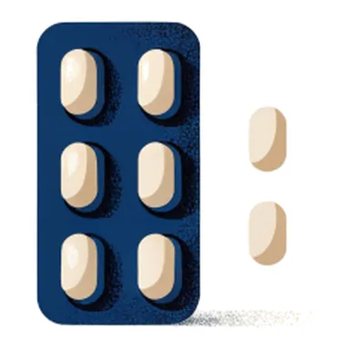
die Tablette, die Tabletten 알약
Ich nehme eine Tablette.나는 약을 한 알 먹어요.
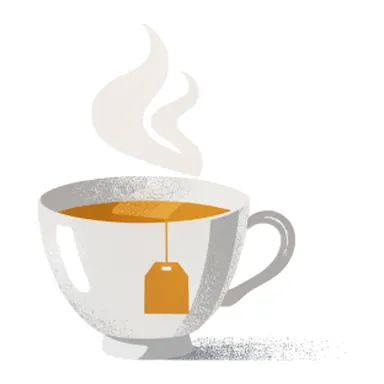
der Tee, die Tees 차
Ich trinke Tee.나는 차를 마셔요.
viel 많이, 많은
Du sollst viel Tee trinken.차를 많이 마셔야 해요.
bleiben 머무르다, 그대로 있다
Ich bleibe im Bett.나는 침대에 있어요.
zu Hause 집에
Sie soll zu Hause bleiben.그녀는 집에 있어야 해요.
sollen (du sollst, er soll) ~해야 한다 (다른 사람이 하라고 함)
Du sollst im Bett bleiben.너는 침대에 있어야 해.
dürfen (du darfst, er darf) ~해도 된다
Darf ich Fußball spielen?축구해도 돼요?
helfen (du hilfst, er hilft) 돕다
Wollen wir ihr helfen?우리가 그녀를 도울까?
Was ist los? 무슨 일이야?
Was ist los? Bist du krank?무슨 일이야? 아파?
Gute Besserung! 빨리 나아!
Du bist krank? Gute Besserung!아프다고? 빨리 나아!
이 과의 낱말로 여덟 문제를 풀어요.
예문을 보고 답해 보세요.
Mein Kopf tut weh. tut과 weh는 어디에 있나요?
규칙
아픈 곳은 두 가지로 말해요. 하나는 wehtun이에요. 아픈 곳이 주어가 되고, tut은 둘째 자리에, weh는 맨 끝에 와요. 아픈 곳이 복수면 tun이 돼요. 다른 하나는 haben과 -schmerzen이에요. 몸의 이름 뒤에 schmerzen을 붙여요.
| 아픈 곳 | wehtun | haben + Schmerzen |
|---|---|---|
| der Kopf | Mein Kopf tut weh. | Ich habe Kopfschmerzen. |
| der Hals | Mein Hals tut weh. | Ich habe Halsschmerzen. |
| der Bauch | Mein Bauch tut weh. | Ich habe Bauchschmerzen. |
| die Füße | Meine Füße tun weh. | – |
주의 누가 아픈지는 mir, dir, ihm, ihr로도 말해요. Mir tut der Kopf weh. Was tut dir weh?
예문을 보고 답해 보세요.
Yuna를 '그녀에게'라고 말할 때 쓴 말은 무엇인가요?
규칙
'~에게'를 뜻하는 3격(Dativ) 대명사예요. Wie geht es …?, wehtun, helfen, gefallen, stehen과 함께 써요.
| ~은, ~는 | ich | du | er | sie | wir | ihr | sie, Sie |
|---|---|---|---|---|---|---|---|
| ~에게 | mir | dir | ihm | ihr | uns | euch | ihnen, Ihnen |
주의 ihr는 뜻이 세 가지예요. '너희는'(Ihr kommt.), '그녀의'(ihr Bruder), '그녀에게'(Es geht ihr gut.)예요. 문장 안의 자리를 보고 구별해요.
예문을 보고 답해 보세요.
Heute darfst du nicht in die Schule gehen. gehen은 어디에 있나요?
규칙
sollen은 다른 사람이 하라고 한 일, dürfen은 해도 되는 일을 말할 때 써요. nicht dürfen은 '하면 안 된다'는 뜻이에요. können, müssen처럼 둘째 자리에 오고, 다른 동사는 원형으로 맨 끝에 가요.
| sollen | dürfen | |
|---|---|---|
| ich | soll | darf |
| du | sollst | darfst |
| er, sie, es | soll | darf |
| wir | sollen | dürfen |
| ihr | sollt | dürft |
| sie, Sie | sollen | dürfen |
주의 müssen은 꼭 해야 하는 일, sollen은 의사나 부모님 같은 다른 사람이 하라고 한 일이에요. 의사가 차를 마시라고 했으면 Ich soll viel Tee trinken.이라고 해요.
Lukas가 병원에 갔어요. 의사와 하는 말을 듣고 답하세요.
Beim Arzt
Mann Guten Tag, Lukas. Was tut dir weh?
Lukas Guten Tag. Mein Bauch tut weh. Und ich bin sehr müde.
Mann Hast du auch Kopfschmerzen?
Lukas Nein, Kopfschmerzen habe ich nicht.
Mann Gut. Du sollst heute zu Hause bleiben und Tee trinken. Du darfst keine Schokolade essen!
Lukas Okay. Darf ich Fußball spielen?
Mann Nein! Heute darfst du nicht Fußball spielen.
Was tut Lukas weh?
Lukas hat Kopfschmerzen.
Kopfschmerzen habe ich nicht.
의사는 Lukas에게 무엇을 하라고 하나요?
Lukas가 오늘 하면 안 되는 것은 무엇인가요?
듣고 어디가 아픈지 고르세요.
어디가 아픈가요?
Mein Hals tut weh.
어디가 아픈가요?
Ich habe Bauchschmerzen.
어디가 아픈가요?
Meine Füße tun weh.
어디가 아픈가요?
Mir tut der Rücken weh.
Sabine가 Frau Schneider에게 보낸 메일이에요. 읽고 답하세요.
E-Mail an Frau Schneider
Guten Morgen, Frau Schneider,
Yuna kann heute leider nicht in die Schule kommen. Sie ist krank. Sie hat Fieber und Halsschmerzen.
Sie soll zwei Tage zu Hause bleiben. Am Mittwoch kann sie vielleicht kommen.
Vielen Dank!
Sabine Wagner
Yuna hat Bauchschmerzen.
Sie hat Fieber und Halsschmerzen.
Yuna는 며칠 동안 집에 있어야 하나요?
Sie soll zwei Tage zu Hause bleiben.
Wann kann Yuna vielleicht in die Schule kommen?
이 메일은 누가 썼나요?
tut과 tun 가운데 알맞은 말을 고르세요.
Mein Kopf weh.
Meine Füße weh.
Der Bauch ihm weh.
Meine Zähne weh.
dir der Rücken weh?
알맞은 대명사를 고르세요.
Yuna ist krank. Es geht nicht gut.
Tim ist auch krank. tut der Bauch weh.
Wir sind gesund. Es geht gut.
Hallo, Lukas! Wie geht es ?
Ich bin müde. Der Kopf tut weh.
Das ist Elif. Wir helfen .
주어에 맞는 형태를 고르세요.
Du im Bett bleiben.
Yuna heute nicht in die Schule gehen.
Ich viel Tee trinken.
ich Fußball spielen?
Wir hier nicht essen.
Ihr jetzt Hausaufgaben machen.
몸의 이름과 뜻을 짝지으세요.
낱말을 순서대로 눌러 문장을 만드세요.
머리가 아파.
너는 침대에 있어야 해.
나는 오늘 축구하면 안 돼.
그녀는 몸이 안 좋아.
듣고 그대로 써 보세요.
Mein Kopf tut weh. 머리가 아파요.
Yuna ist krank. Yuna는 아파요.
Du sollst im Bett bleiben. 침대에 있어야 해.
Was ist los? 무슨 일이야?
Was tut dir weh? 어디가 아파?
Mein Kopf tut weh. 머리가 아파.
Ich habe Bauchschmerzen. 배가 아파.
Ich habe Fieber. 열이 있어.
Du sollst im Bett bleiben. 침대에 있어야 해.
Trink viel Tee! 차를 많이 마셔!
Geh zum Arzt! 병원에 가 봐!
Gute Besserung! 빨리 나아!
Ich bin krank. Ich kann heute nicht kommen. 아파요. 오늘 못 가요.
Yuna ist krank. Es geht ihr nicht gut. Yuna는 아파요. 몸이 안 좋아요.
대화 A에서 역할을 하나 고르세요. 상대의 말은 음성으로 나오고, 내 차례에는 직접 말해요.
아픈 곳, 다른 증상 하나, 그럴 때 하라고 들은 일을 적으세요. 완성된 문장을 소리 내어 읽어 보세요.
Ich bin krank. Mein Hals tut weh.
Ich habe auch Fieber.
Ich soll im Bett bleiben.
Ich bin krank
아파서 오늘 약속에 못 가요. 친구에게 메시지를 써 보세요.
Hallo Elif! Ich kann heute leider nicht kommen. Ich bin krank. Mein Kopf tut weh und ich habe Fieber. Ich soll im Bett bleiben und viel Tee trinken. Vielleicht können wir am Samstag ins Kino gehen. Bis dann!
다 쓴 뒤에 확인해 보세요.
Ich kann sagen, was mir wehtut.어디가 아픈지 말할 수 있어요.
Ich kann einen Rat geben.아픈 사람에게 조언할 수 있어요.
Ich kann sagen: Ich bin krank und kann nicht kommen.아파서 못 간다고 알릴 수 있어요.